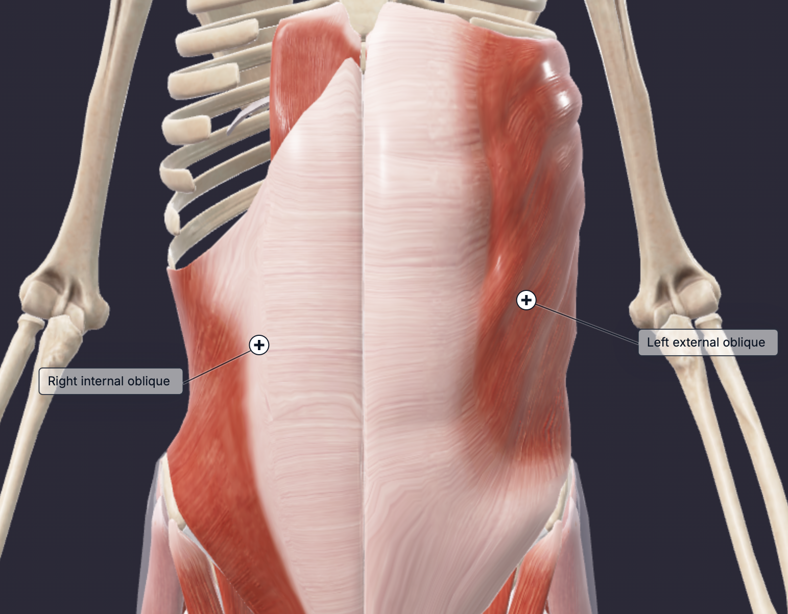

The obliques are abdominal muscles that function in conjunction with the rectus abdominis to form the core musculature. The obliques comprise of two primary components: the external obliques and the internal obliques. The external obliques are the most superficial abdominal muscles, extending from the lower ribs to the pelvis. These muscles cover the lateral aspects of the abdominal region, while the internal obliques lie deep to the external obliques on each side of the trunk. The primary functions of the external obliques include facilitating trunk rotation, contributing to trunk flexion through bilateral contraction in coordination with the rectus abdominis and internal obliques by drawing the pubis toward the xiphoid process (as observed in movements such as crunches or sit-ups), stabilizing the core, compressing the abdominal cavity, assisting with forced expiration during respiration, and enabling lateral flexion of the trunk.
Since a primary function of the obliques are trunk rotation and lateral flexion, any exercise that involves trunk rotation or lateral flexion will train the obliques.
Pick one exercise and do 2-3 sets based on your preference.
